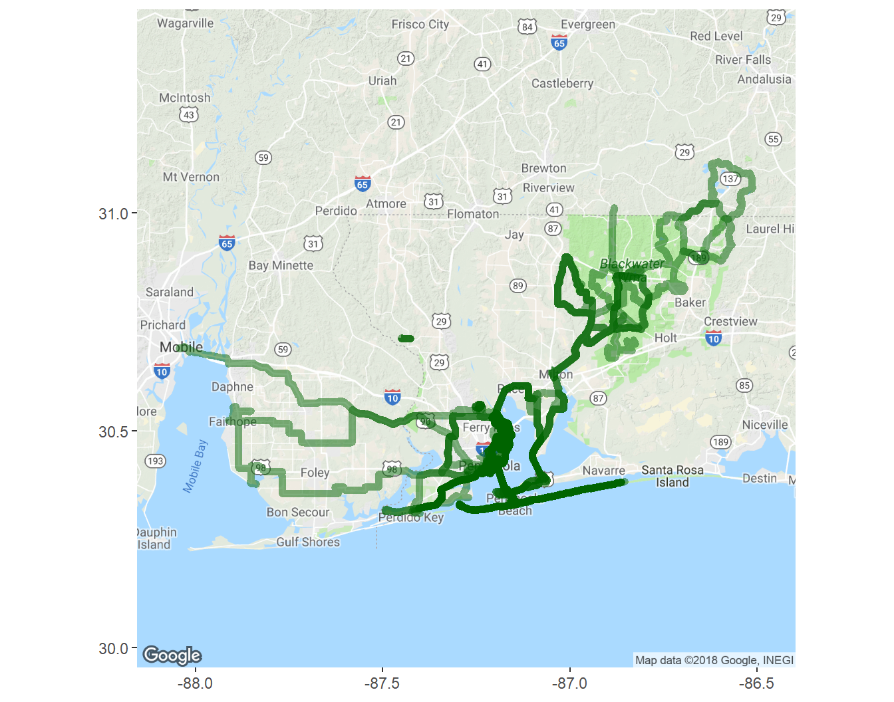
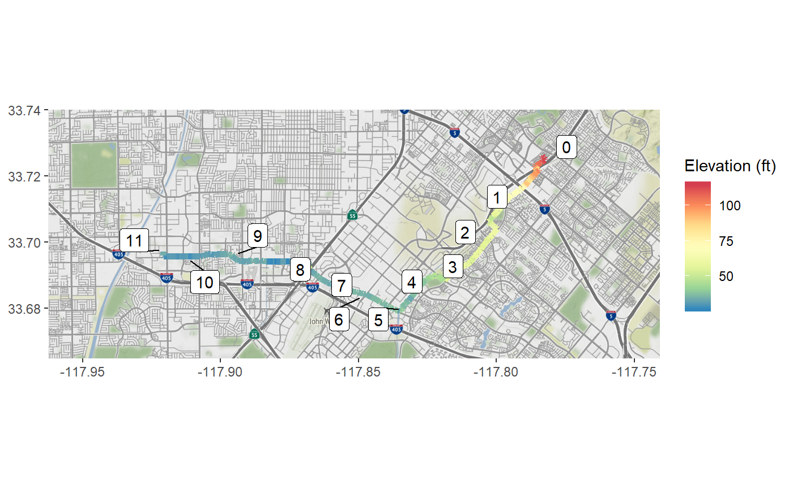
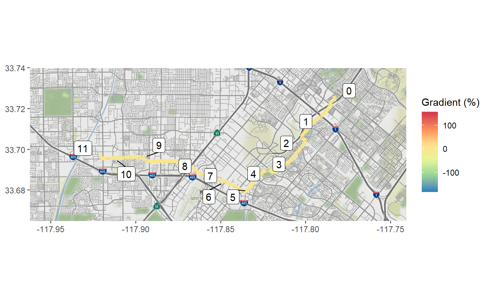
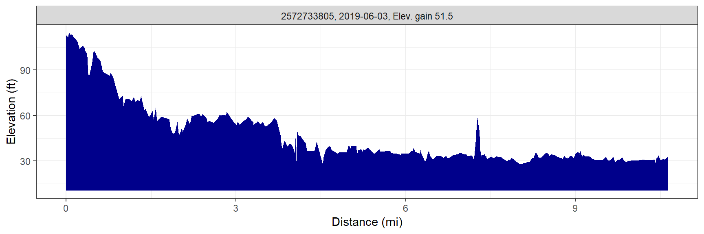
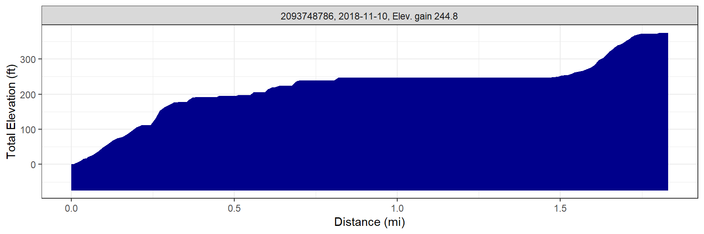
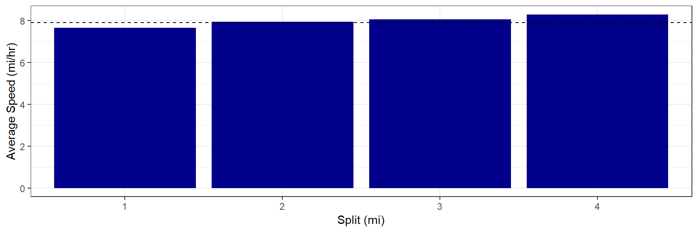
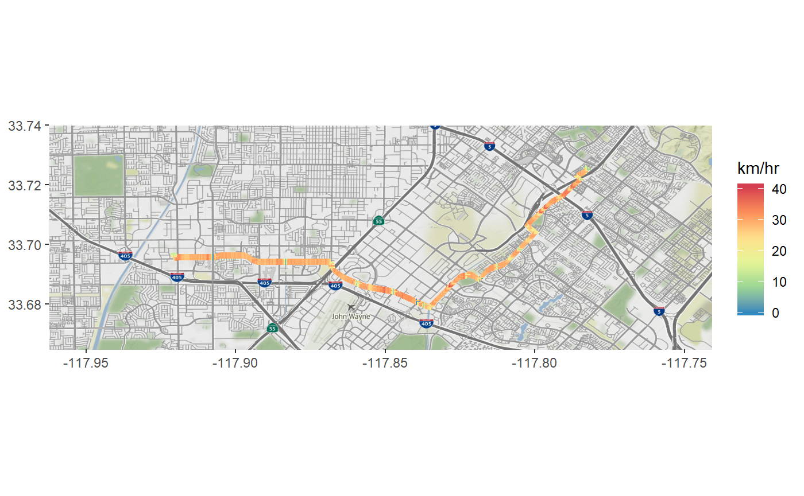
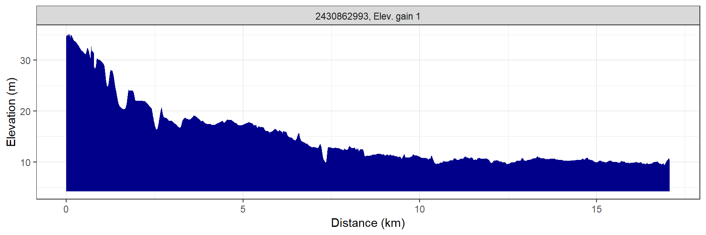

Marcus W. Beck, mbafs2012@gmail.com, Pedro Villarroel, pedrodvf@gmail.com, Daniel Padfield, dp323@exeter.ac.uk, Lorenzo Gaborini, lorenzo.gaborini@unil.ch, Niklas von Maltzahn, niklasvm@gmail.com
Linux: 
Windows:

Overview and installation
This is the development repository for rStrava, an R package to access data from the Strava API. The package can be installed and loaded as follows:
install.packages('devtools')
devtools::install_github('fawda123/rStrava')Issues and suggestions
Please report any issues and suggestions on the issues link for the repository.
Package overview
The functions are in two categories depending on mode of use. The first category of functions scrape data from the public Strava website and the second category uses the API functions or relies on data from the API functions. The second category requires an authentication token. The help files for each category can be viewed using help.search:
help.search('notoken', package = 'rStrava')
help.search('token', package = 'rStrava')Scraping functions (no token)
An example using the scraping functions:
# get athlete data
athl_fun(2837007, trace = FALSE)## $`2837007`
## $`2837007`$units
## [1] "mi" "h" "m" "ft"
##
## $`2837007`$location
## [1] "Irvine, California"
##
## $`2837007`$current_month
## Distance Time Elevation
## 136.900000 9.666667 1676.000000
##
## $`2837007`$monthly
## Nov 2017 Dec Jan 2018 Feb Mar Apr May Jun
## 225.4824 257.6941 281.8529 297.9588 362.3824 273.8000 306.0118 233.5353
## Jul Aug Sep Oct Nov
## 386.5412 285.8794 358.3559 330.1706 136.9000
##
## $`2837007`$year_to_date
## Distance Time Elevation Gain Rides
## 2907.30 189.45 37930.00 271.00
##
## $`2837007`$all_time
## Total Distance Total Time Total Elev Gain Total Rides
## 23414.3 1437.8 187946.0 1821.0API functions (token)
Setup
These functions require a Strava account and a personal API, both of which can be obtained on the Strava website. The user account can be created by following instructions on the Strava homepage. After the account is created, a personal API can be created under API tab of profile settings. The user must have an application name (chosen by the user), client id (different from the athlete id), and an application secret to create the authentication token. Additional information about the personal API can be found here. Every API retrieval function in the rStrava package requires an authentication token (called stoken in the help documents). The following is a suggested workflow for using the API functions with rStrava.
First, create the authentication token using your personal information from your API. Replace the app_name, app_client_id, and app_secret objects with the relevant info from your account.
app_name <- 'myappname' # chosen by user
app_client_id <- 'myid' # an integer, assigned by Strava
app_secret <- 'xxxxxxxx' # an alphanumeric secret, assigned by Strava
# create the authentication token
stoken <- httr::config(token = strava_oauth(app_name, app_client_id, app_secret))Setting cache = TRUE for strava_oauth will create an authentication file in the working directory. This can be used in later sessions as follows:
stoken <- httr::config(token = readRDS('.httr-oauth')[[1]])Finally, the get_heat_map and get_elev_prof functions optionally retrieve elevation data from the Google Maps Elevation API. To use these features, an additional authentication key is required. Follow the instructions here. The key can be added to the R environment file for later use:
# save the key, do only once
cat("google_key=XXXXXXXXXXXXXXXXXXXXXXXXXXXXXXXXXXXXXX\n",
file=file.path(normalizePath("~/"), ".Renviron"),
append=TRUE)
# retrieve the key, restart R if not found
mykey <- Sys.getenv("google_key")The get_heat_map function uses ggmap to create base maps. A Google API key is needed if using any map services where source = "google" for the argument to get_heat_map. The same key used for the Elevation API can be used but must be registered externally with the ggmap package using register_google() before executing get_heat_map.
library(ggmap)
register_google(mykey)Using the functions
The API retrieval functions are used with the token.
myinfo <- get_athlete(stoken, id = '2837007')
head(myinfo)## $id
## [1] 2837007
##
## $username
## [1] "beck_marcus"
##
## $resource_state
## [1] 3
##
## $firstname
## [1] "Marcus"
##
## $lastname
## [1] "Beck"
##
## $city
## [1] "Irvine"An example creating a heat map of activities:
library(dplyr)
# get activities, get activities by lat/lon, plot
my_acts <- get_activity_list(stoken)
act_data <- compile_activities(my_acts) %>%
filter(start_longitude < -86.5 & start_longitude > -88.5) %>%
filter(start_latitude < 31.5 & start_latitude > 30)
get_heat_map(act_data, col = 'darkgreen', size = 2, distlab = F, f = 0.4)
Plotting elevation and grade for a single ride:
# plot elevation along a single ride
get_heat_map(my_acts, acts = 1, alpha = 1, add_elev = T, f = 0.3, key = mykey, size = 2, col = 'Spectral', maptype = 'satellite', units = 'imperial')
# plot % gradient along a single ride
get_heat_map(my_acts, acts = 1, alpha = 1, add_elev = T, f = 0.3, as_grad = T, key = mykey, size = 2, col = 'Spectral', expand = 5, maptype = 'satellite', units = 'imperial')
Get elevation profiles for activities:
# get activities
my_acts <- get_activity_list(stoken)
get_elev_prof(my_acts, acts = 1, key = mykey, units = 'imperial')
get_elev_prof(my_acts, acts = 1, key = mykey, units = 'imperial', total = T)
Plot average speed per split (km or mile) for an activity:
# plots for most recent activity
plot_spdsplits(my_acts, stoken, acts = 1, units = 'imperial')
Additional functions are provided to get “stream” information for individual activities. Streams provide detailed information about location, time, speed, elevation, gradient, cadence, watts, temperature, and moving status (yes/no) for an individual activity.
Use get_activity_streams for detailed info about activites:
# get streams for the first activity in my_acts
strms_data <- get_activity_streams(my_acts, stoken, acts = 1)
head(strms_data)## altitude distance grade_smooth moving time velocity_smooth lat
## 1 289.3 0.0000 1.3 FALSE 0 0.00 33.67501
## 2 289.3 0.0040 3.7 TRUE 3 4.68 33.67498
## 3 289.4 0.0076 6.0 TRUE 6 4.68 33.67495
## 4 289.7 0.0108 7.2 TRUE 8 5.04 33.67493
## 5 290.2 0.0149 8.2 TRUE 11 5.40 33.67489
## 6 290.3 0.0179 7.1 TRUE 13 5.04 33.67486
## lng id
## 1 -117.6419 1957434123
## 2 -117.6419 1957434123
## 3 -117.6419 1957434123
## 4 -117.6419 1957434123
## 5 -117.6419 1957434123
## 6 -117.6419 1957434123Stream data can be plotted using any of the plotting functions.
# heat map
get_heat_map(strms_data, alpha = 1, filltype = 'speed', f = 0.3, size = 2, col = 'Spectral', distlab = F)
# elevation profile
get_elev_prof(strms_data)
# speed splits
plot_spdsplits(strms_data, stoken)
License
This package is released in the public domain under the creative commons license CC0.